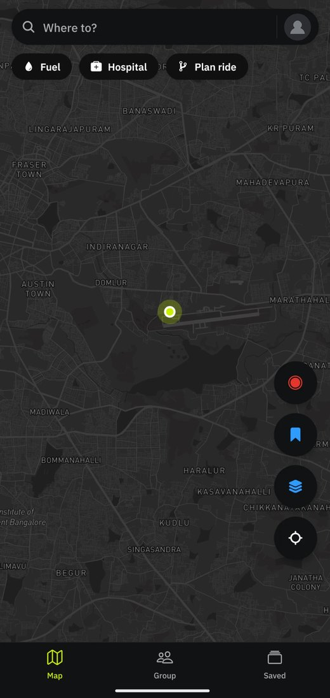
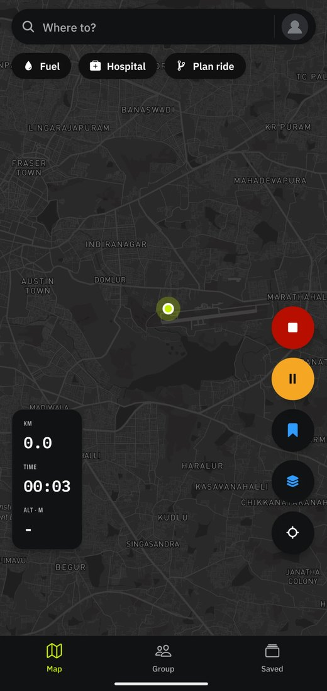
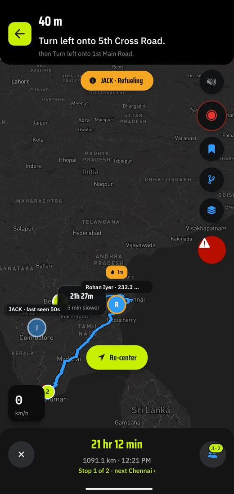
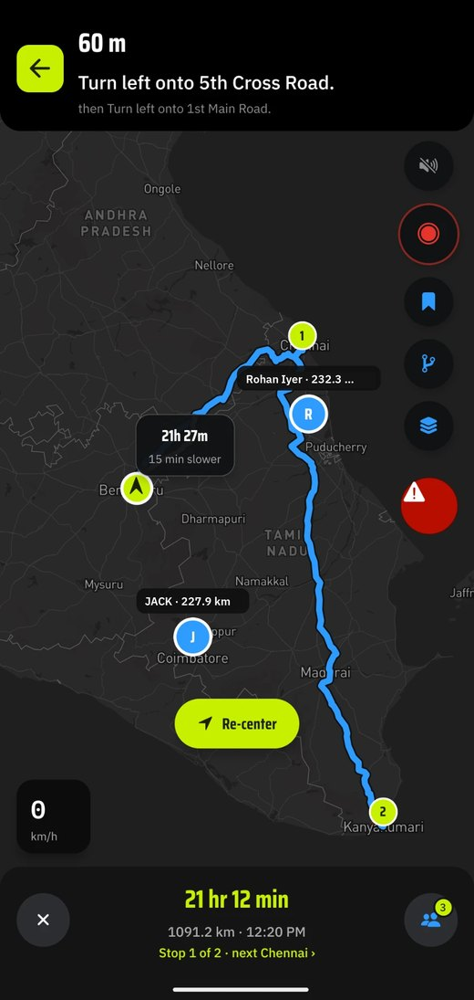
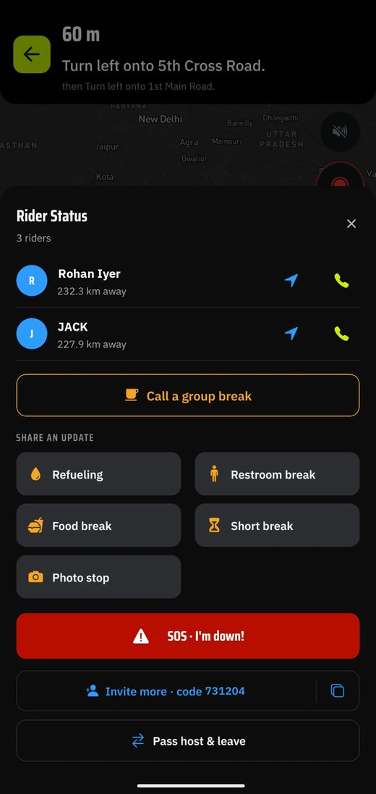
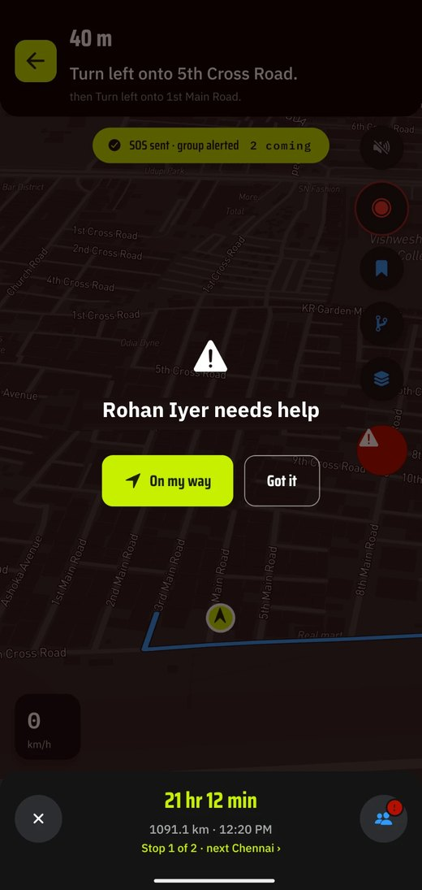
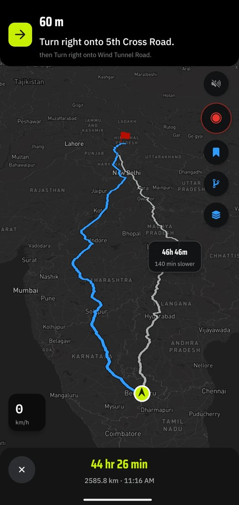
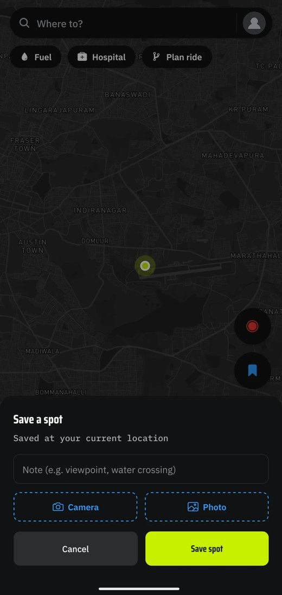
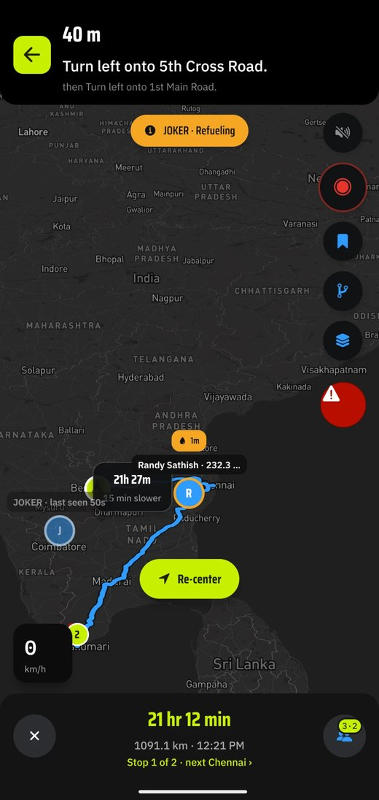

The big blue one is better at navigation. Obviously. It has more engineers than we have users. What it will not do is hold six riders together on a bad road, or keep drawing your line after the signal gives up. So we went and built the parts nobody else could be bothered with.
Android for now · No ads · No feed · No streaks · Nobody to impress
Planned in the app. Bengaluru to the Himalayas, and the slower way round

The two things
There are apps that do forty things adequately. This one does two things properly and the rest well enough that nobody has to apologise.
One · Recording
Tap once. Phone in the tank bag, screen off, forget it exists. It draws every metre, including the wrong turn you will later deny taking. Stop for chai, hit pause, and the clock waits with you, because a two hour lunch is not slow riding.
It also keeps drawing with no signal at all, which is roughly the point where the app already on your home screen offers you a grey rectangle and a spinner.

Two · Group rides
Share a code on WhatsApp. That is the setup. Everyone is on the map and moving, with the gap in kilometres beside their name, so from the back you can see exactly how far ahead the pack is instead of doing that arithmetic yourself at dusk and getting it wrong.
Somebody needs fuel, or food, or a photograph they will not shut up about afterwards? They say so without anybody stopping. And when it goes properly wrong there is a red button, which is the one feature we would be delighted never to demonstrate.

Everyone, one map
Every rider moving at once, and a pill when somebody peels off for fuel.

The gap, in kilometres
Not "somewhere ahead". A number, next to a name, updating.

Said without stopping
Fuel, food, a photo stop. One tap and the whole group knows.

The one you hope stays unused
Every screen in the group goes red until somebody answers.
Names changed, for obvious reasons. The riders were real, the distances were real, and the Sunday was real.
The rest of it
Each of these could have its own heroic paragraph. Nobody wants that.
Plan & navigate
The one you already have picks a road, bins the alternative and never mentions it again. We put both up with the difference in minutes, so the long way round is a decision you made at the junction rather than one you work out at ten at night, still an hour from anywhere.

Spots
A gap in the trees. A tea stall facing the right way. A crossing that eats front wheels after rain. None of them have a listing, a star rating or a photograph of somebody's thali. Save it while you are standing on it, with a picture and one line of warning, and whoever you send there turns up knowing.

Saved
Send them to Strava or a Garmin, drop a card into the group chat, or take the file and never open this app again. We would rather you could walk out at any moment and chose not to. Nobody here is quietly working out where you go on Sundays.

The one that matters
Not show a cached map. Record. Draw your line, hold your route, keep your spots, forty kilometres past the last tower with the SIM tray empty. Download the ground before you leave and ours does it without being asked twice.
Go and find out what yours does. Aeroplane mode, halfway up a hill, and about four minutes of honesty. Ideally not on the day it matters.
How you get it
Free on Google Play, with no ads in it and nothing to subscribe to. It spent a long time in testing with riders who told us it was rubbish until it wasn't.
01
Search "Ride Sync" on Google Play, or use the button below. Normal store, normal updates. No sideloading, no APK from a stranger on Telegram.
02
Host a ride, share the invite code on WhatsApp, and everybody is on the same map. That is the entire setup.
03
There is a button in the app for precisely that. Everything gets read, everything gets an answer. We are not big enough to ignore you yet.
Say something
A bug. A road the routing is stupid about. Something you wish it did, or something it does that annoys you. One inbox, one person, and an answer.
Nothing is stored on this page. Press send and your own email app opens with the message already written, so you can see exactly what leaves.